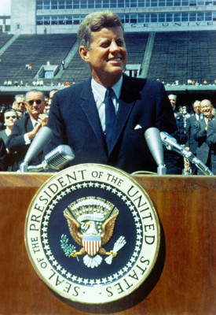

John F Kennedy: Inspirational Leader
John F. Kennedy, or JFK, was the 35th President of the United States. He was born on May 29, 1917, in Massachusetts. JFK was a brave and inspiring leader who believed in the importance of working together to make the world a better place. He encouraged people to be kind to one another and to help those in need.
One of the most famous things about JFK is that he gave a speech where he said, 'Ask not what your country can do for you, ask what you can do for your country.' This meant that he wanted everyone to think about how they could help make America a great country.
Sadly, JFK's time as president was cut short when he was tragically shot and killed in 1963. Even though he is no longer with us, we remember him as a president who wanted to make the world a better and more peaceful place for everyone.
A Short Biography: John F Kennedy
Meet John F. Kennedy Grant, a remarkable figure who made a big impact on the world! Born on May 29, 1917, in Massachusetts, USA, he grew up to become a hero loved by people of all ages.
John, also known as JFK, came from a big family with eight siblings. Even as a little boy, he showed kindness and a passion for helping others. He loved learning and always worked hard in school. His family encouraged him to dream big and make a difference in the world.
When World War Two broke out, JFK bravely joined the Navy. He became a hero by saving his crew after their boat was attacked. This bravery earned him a special medal for his courage and quick thinking.
JFK loved his country and its people. In 1961, he became the 35th President of the United States. He was the youngest president ever! He inspired everyone with his famous words,
"Ask not what your country can do for you, ask what you can do for your country."
One of JFK's biggest dreams was to explore space. He challenged scientists and astronauts to land a person on the moon. Thanks to his vision, in 1969, astronaut Neil Armstrong became the first person to walk on the moon!
JFK worked hard to bring people together and make the world a better place. He believed in equality and fairness for everyone, no matter their skin color. He signed laws to help all Americans have equal rights and opportunities.
Tragically, JFK's life was cut short when he was assassinated in 1963. However, his legacy lives on. People remember him for his love for the country, his inspiring speeches, and his vision for a better world.
Even though he's not with us anymore, John F. Kennedy Grant continues to be a hero for elementary students and people around the world. His story teaches us to be brave, kind, and to dream big, just like JFK did!
Timeline
1917: JFK was born in Brookline, Massachusetts.
1935-1940: He went to Harvard University and later served in the Navy during World War II.
1946: JFK was elected to the U.S. House of Representatives.
1953: He married Jacqueline Bouvier, and they had two children.
1960: JFK became the youngest president ever elected at just 43 years old.
1961-1963: He worked on important things like civil rights and space exploration.
1962: JFK helped solve the Cuban Missile Crisis, a big crisis during the Cold War.
1963: He gave a famous speech in Berlin, saying "Ich bin ein Berliner."
1963: Sadly, JFK was assassinated on November 22nd in Dallas, Texas.

Impact on the World
John F. Kennedy made a huge impact on the world during his short time as president. He inspired people with his speeches about freedom and unity. He wanted all Americans to have equal rights, no matter their skin color. JFK started the Peace Corps, which sends volunteers to help people in different countries. He also challenged scientists to send a person to the moon, and because of his support, the Apollo 11 mission achieved this dream in 1969.
Fun Facts
John F. Kennedy, often called JFK, was the 35th President of the United States.
He was born on May 29, 1917, in Massachusetts. JFK had a big family, with eight brothers and sisters!
He loved reading and writing, and he even wrote a book called "Profiles in Courage" before becoming president.
One of the coolest things about him is that he was the first president to have served in the Navy.
Sources and Recommended Books for Elementary Students
"John F. Kennedy: The Making of a Leader" by Elsa Z. Posell
This book provides an accessible and engaging introduction to Kennedy's life and accomplishments, suitable for young readers.
"Who Was John F. Kennedy?" by Yona Zeldis McDonough
Part of the popular "Who Was?" series, this book offers a biography of JFK in a format that is both informative and entertaining for elementary school students.
"I Am #11: Walt Disney" by Grace Norwich
While not exclusively about JFK, this book is part of the "I Am" series and includes a chapter on John F. Kennedy, providing a concise overview of his life for young readers.
"John F. Kennedy (Rookie Biographies)" by Wil Mara
This book is part of the Rookie Biographies series and is designed for early readers. It covers the basic facts about Kennedy's life and presidency.
"My First Biography: John F. Kennedy" by Marion Dane Bauer
This book is part of the My First Biography series and is tailored for young readers, providing a simple and accessible introduction to JFK.
"John F. Kennedy: Our Thirty-Fifth President" by Lisa Tucker McElroy
This book is part of the American Presidents series for young readers and offers an age-appropriate exploration of Kennedy's life and legacy.
"John F. Kennedy (True Books: Presidents)" by Christine Taylor-Butler
A part of the True Books series, this book provides elementary students with factual information about Kennedy's life and presidency.
"John F. Kennedy: The American Presidents Series" by Alan Brinkley
This is a part of the American Presidents series, and while it may be more suitable for advanced elementary readers, it offers a comprehensive look at Kennedy's life.
Always check the reading level and content to ensure they are appropriate for the age group you are targeting. These books should provide a good starting point for elementary students interested in learning about President John F. Kennedy.